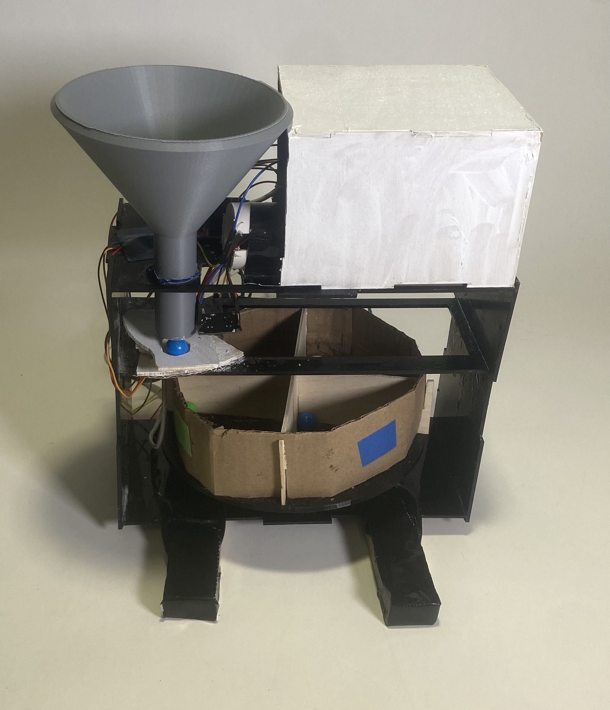

Color Sorting RobotSkills: Servo Motor, Stepper Motor, Rapid Prototyping, Color Sensor, Laser Cutter, H-Bridge, Raspberry Pi, HTML, Python, Band Saw

In my Robotics and Mechatronics course I was challenged to sort colored balls using a color sensor. Sarah Abbo and I created a sorting robot which can functionally limit the process to handling one ball at a time, detect the color of the ball, then make a decision to move the hopper to the correct section, then dispense and reload the next ball from the funnel autonomously.